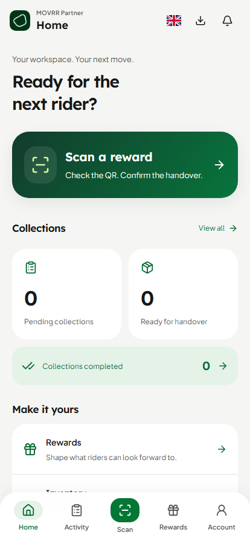
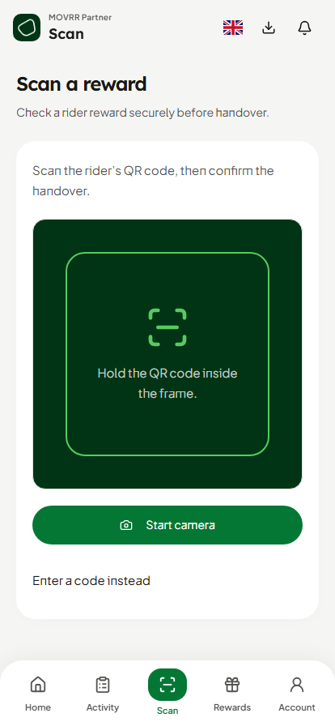
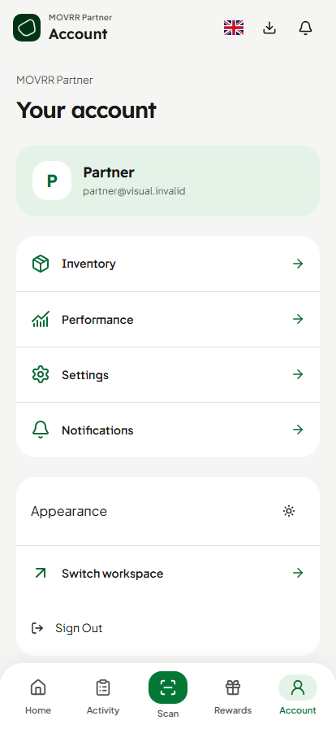

Actual Partner routes with isolated authentication and empty operational reads. Existing Rider reference renders actual Button and ScreenHeader source through declared web adapters; its source hashes still match. Browser renders, not physical-device acceptance. Verification and limitations.
Rider reference Lexend headings, Jakarta body, neutral canvas, soft cards and green pill actions.

Partner Home Merchant task hierarchy, real queue model and dedicated app navigation.

Partner Scan Canonical camera and validation flow inside the mobile app shell.

Partner Account Identity, authorized management and switching as a full mobile screen.